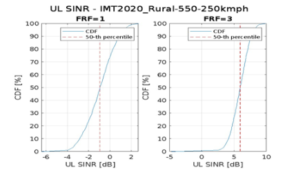
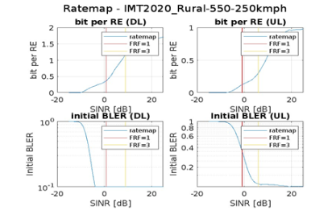

Mobility
As defined in in Report ITU-R M.2514, mobility is the maximum device speed at which a defined QoS can be achieved (in km/h). The QoS is defined as normalized traffic channel link data rate.
Both configurations with frequency reuse factor equal to 1 (FRF1) and frequency reuse factor equal to 3 (FRF3) are considered for mobility evaluation of the Rural-eMBB-s test environment.
The evaluation results of mobility for NR satellite access for both evaluation configuration with FRF1 and FRF3 are provided in the following table. It is observed that NR satellite access fulfils the mobility requirement under 250 km/h.
| Mobility | Min Req. | Results for FRF=1 | Results for FRF=3 | |
|---|---|---|---|---|
| Test environment | Rural eMBB-s | |||
| UE Speed (km/h) | 250 km/h | |||
| Normalized traffic channel link data rate (bit/s/Hz) | 0.005 | 0.0215 | 0.0884 | |
| Residual packet error ratio | <1% | 0.54% | 0.14% | |
| Number of retransmissions | To be reported | 5 | 3 |
In the below figure, the CDF of SINR for uplink is shown for the evaluation of mobility of a UE moving at 250 kmph.

The following figure illustrates the DL and UL mobility ratemap for FRF=1 and FRF=3
